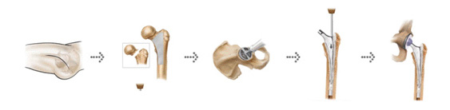
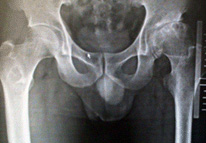
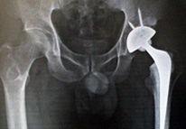

髋关节人工关节手术
当老年人的髋关节在下雨天或在冰上滑倒造成骨折时，或由于各种原因髋关节变歪或关节内的软骨磨损时， 在患者体内插入用特殊合金与陶瓷制作的人工髋关节，来缓解疼痛，恢复正常关节运动，帮助患者恢复日常生活。
人工髋关节手术进行过程

-
- 
做人工髋关节手术前
- 髋关节部位磨损无法步行，只能躺着生活，可能出现并发症
-
- 
做人工髋关节手术后
- 实施人工髋关节表面置换术后，能够独立步行，并恢复正常的日常生活
需要做人工关节手术的情况
- 由于髋骨或髋臼骨折、风湿性关节炎、股骨缺血性坏死、髋骨退变性关节炎或老人股骨的转子部骨折、 股骨颈部骨折等疾病造成疼痛而无法正常生活
- 由于髋关节疼痛，甚至日常生活受到妨碍
- 即使使用药物或拐杖也无法缓解髋关节的疼痛
- 髋关节僵硬而且伴随疼痛
- 放射线检查结果髋关节炎非常严重，疼痛没有好转而且不断加重